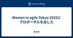
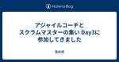
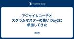

天の月
https://aki-m.hatenadiary.com/
ソフトウェア開発をしていく上での悩み, 考えたこと, 学びを書いてきます(たまに関係ない雑記も)
フィード
スクラム祭りの打ち合わせ(9回目)をしてきた
天の月
aki-m.hatenadiary.com こちらの打ち合わせをしてきたので、会の様子と感想を書いていこうと思います。 メールアドレス作成 Google Groupを作り実行委員のメンバーを追加しました。また、権限設定をして追加した実行委員のメンバーは全員Groupのオーナーとなるようにしました。 Xのアカウント立ち上げ Tweets by scrummatsuri x.com Google Groupではメールアドレス登録ができなかったので、gmailアカウントを一つ作って、そのアカウントでXの登録をしました。(Google Groupのメール受信設定を弱めてみましたがメールが来ず...) …
10時間前
yr-learning Vol39に参加してきた
天の月
yr-camp.connpass.com こちらのイベントに参加してきたので、会の様子と感想を書いていこうと思います。 雑談 @Customer DIP違反 全体を通した感想 雑談 今日は矢田さんが久しぶりに来たということもあって、40分近く雑談をしていました笑 若手というと25歳くらいの印象があるんだけれど、20代(28歳、29歳...)で若手というのはどうなんだろうか？という話をしていきました 来たるイベントがあるのですが、参加者の様子がなんかおかしいぞ...という話をしていました。当初は二人でペアプロできるなんてすごく楽しみ！と思っていたのですが、自分はどんどんペアプロするのが心配になっ…
1日前
大人のソフトウェアテスト雑談会 #235【おばけ】に参加してきた
天の月
ost-zatu.connpass.com 今週もテストの街葛飾に行ってきたので、会の様子と感想を書いていこうと思います。 怖い参加者 出世するQAエンジニアと良いQAエンジニア おおひらさんのプロポーザル RSGT 葛飾例大祭 全体を通した感想 怖い参加者 creationline.connpass.com 今度こちらのイベントを開催するのですが、その経緯やコスプレをするのか？という話をしていきました。ただ、よく見ると参加者の人たちは怖い人たちばかりなので、当日が楽しみではなくなってきました笑 出世するQAエンジニアと良いQAエンジニア お金の使い方が上手な(経営目線で予算を立てられるような…
2日前
(オンライン読書会) これが現象学だに参加してきた
天の月
educational-psychology.connpass.com こちらのイベントに参加してきたので、会の様子と感想を書いていこうと思います。 理解不可能性 驚愕 フロイトとの結びつき 異他性と自分 全体を通した感想 理解不可能性 自分と異なった世界に属しているのかという判断基準の一つとして理解不可能性が語られていますが、「Aだ！」と思ってもBだった場合などは理解不可能性があると言えるのだろうか？という話をしました。(例えば違う種族である犬であっても、行動を勝手に解釈して「理解した」と判断することがある) 明確な答えはないものの、理解した！と思ったら勘違いというよりは、異なる場所で異なる…
4日前
SREをはじめよう ―個人と組織による信頼性獲得への第一歩~ Forkwell Library#70に参加してきた
天の月
forkwell.connpass.com 会の概要 会の様子 山口さんの講演 こういう本ではない 翻訳の裏話 著者の話 第一部 第二部 第三部 パネルディスカッション RoleとしてSREが存在してない組織で必要性をどのような軸で判断するのが良いのか？上層部がエンジニアリングに詳しくないなら必要性はどう伝えればいいのか？ SREに向いている人は？ SREの文化がなかった組織で始まるにあたって、プロジェクトチームに対して、SREのロールを与えられた人はプロジェクトチームに対してどのようなアプローチから始めるべきか？ SREの職種が面白いと思えるポイントは？ SREはどんな組織にも必要か？ SR…
4日前
RSGT2025で発表できることになりました
天の月
タイトルの通り、RSGT2025に出していたプロポーザルが採択されて発表できることになったので、今日はその告知です。 confengine.com 発表概要 自分が外部アジャイルコーチとして現場に入るとき多く聞く要望の一つに、「チームや組織がどれくらいアジャイルになっているのかを客観的に評価してほしい」があります。(特にアジャイルチームを立ち上げてちょっと時間が経っている現場では多い印象です) しかし、評価を求めている動機によっては、評価をしても何も成果をあげられなかったり、最悪の場合はアジャイルな組織やチームから後退する可能性もあります。 例えば、以下のような動機は自分の経験上、評価をするこ…
5日前
スクラムカンファレンスの歩き方に参加してきた
天の月
スクラムカンファレンスの歩き方 - connpass こちらのイベントに参加してきたので、会の様子と感想を書いていこうと思います。 会の概要 会の様子 川口さんの講演 スライド 歩き方 RSGTという場で重視していること セッションのカテゴリ 基調講演 OST 参加者の獲得 正義さんの講演 スライド スクラムフェスの全体感 オンラインの原体験 プロポーザルを眺める オフラインとオンラインの差 無理はしない Mahoさんの講演 なぜGSGに行ったのか？ 参加する心境の変化 学んだこと おすすめの歩き方 会全体を通した感想 会の概要 以下、イベントページから引用です。 株式会社タイミーは「一人ひと…
6日前
スクラムフェス金沢2025を開催します
天の月
www.scrumfestkanazawa.org スクラムフェス金沢2025の開催に向けた準備が始まったので、今日はその内容を書いていきます。 日程を決める keynoteを考える 全体を通した感想 日程を決める 趣意書をさくっと公開するためにも、まずは日程を決めようという話をしました。(場所は第一候補が確定済み) 会場予約システムの都合で1月に入らないと正式確定はできないのですが、会場が取れるなら7/11〜7/12で開催する方向で調整しようという話をしました。 keynoteを考える 地元の方に「この人(この会社)の話を聞きたい」と思うものを挙げてもらい、その方のプロフィールや発表スライド…
7日前
yr-learning Vol38に参加してきた 1
1
天の月
yr-camp.connpass.com 今週もこちらのイベントに参加してきたので、会の様子と感想を書いていこうと想います。 SOLIDはOOPのものではない 好きな言語 過度にISPを適用する事例はあるか？ ダックタイピングとISP 全体を通した感想 SOLIDはOOPのものではない オブジェクト指向プログラミングの中でSOLIDの話はされがちですが、そういう話ではないんだというのがClojureのコードを実例としてわかったのは良かったという話をしました。 また、関数型プログラミングのほうがLSPとかは自然と守れやすそうだという話も出ていました。 好きな言語 いろいろなプログラミング言語を触…
8日前
大人のソフトウェアテスト雑談会 #234【髭】に参加してきた
天の月
ost-zatu.connpass.com 音楽 自分は音楽をまったく聞かないのですが、音楽を聞きまくった方々が多数いて、シティポップの話題で盛り上がっていました。 箱根 箱根でおおひらさんが話の中で登場していたのでその話をしていきました。おおひらさんはリトリートなどに全然来ませんが、参加するつもりがないというよりは行き方がわからない、経路をイメージできないという表現が正しいそうです。 バグ密度 confengine.com こちらのプロポーザルがどうもきになるという話をしていきました。 そもそも密度とは何なのか？という話になり、体積あたりの質量という中学生の頃の懐かしい定義が登場していました…
9日前
スクラム祭りの打ち合わせ(8回目)をしてきた
天の月
aki-m.hatenadiary.com こちらの打ち合わせを10/14にしてきたので、その内容まとめです。 XP祭りと同時開催検討結果の報告 趣意書を作る 次回に向けた作業確認 XP祭りと同時開催検討結果の報告 先週の金曜日にXP祭り代表の小井土さんと川口さんとkobaseさんとXP祭りとスクラムフェスを同時開催する方向での話し合い(飲み会)を実施したので、その内容を共有しました。 XP祭りと同時開催することに抵抗はない XP祭りの形式は変えずにその裏でスクラムフェスをやるような感じになる XP祭り向けのkeynoteが裏番組になるので、keynoteは招聘したほうがいいかもしれない もし…
10日前

Women in agile Tokyo 2025にプロポーザルを出した
天の月
confengine.com Women in agile Tokyo 2025にプロポーザルを出したので今日はその告知です。 概要 プロポーザルを出した経緯 チャレンジしたいこと 概要 Scrum TokyoのYoutubeチャンネルが公開されて4年以上が経ち、スクラムやアジャイルの実践者の貴重な知見が多く集積するチャンネルになっています。しかし、公開されている動画の本数は10/11現在で750本を超えており、その中から自分に適したセッションを選ぶ難度はなかなか高いです。そこで、本セッションでは、Scrum Tokyoの全動画を見ている二人が、参加者の悩みやニーズをもとにして、参加者にあった…
11日前

アジャイルコーチとスクラムマスターの集い Day3に参加してきました
天の月
www.attractor.co.jp 昨日に引き続きDay3の内容をブログに書きます。 朝ご飯 丸谷さんと青山(ktraoy)さんと話す 原田さん稲野さんに新しく立ち上げようとしているスクラムフェスの相談をする 帰宅 朝ご飯 稲野さんとを中心に、朝からこういった場でしかできないようなちょっと踏み込んだ話をしていきました。一部ぼかしたり省いしたりしながらではありますが以下のような話をしていきました。 SAFeは特に何も変えなくてもアジャイルを導入していると言えてしまうという話や、一度導入してしまうとそれがアジャイルだというイメージが染み付いてしまってなかなか変革が起こしにくいという話をしていま…
12日前

アジャイルコーチとスクラムマスターの集い Day2に参加してきた
天の月
www.attractor.co.jp 昨日に引き続きDay2の内容をブログに書きます。なお、9時〜22時くらいまで仕事でライムリゾートを離れていました。(1日いるはずなのに内容が薄めに感じたらそのせいです) 及部さんと朝ご飯を食べる Kiroさんに宮ノ下駅まで送ってもらう 小泉さんに迎えに来てもらう みほらぶさん田口さん山根さん中さんと話す moriyuyaさん小泉さんかっぱさんSammyさんtrebyさんAckyさん田口さんJKさん中さんHideさんと話す 小泉さんKiroさんと話す 及部さんと朝ご飯を食べる 及部さんと朝ご飯を食べながら会話しました。今回のリトリートはお互いに忙しかったこ…
13日前

アジャイルコーチとスクラムマスターの集い Day1に参加してきた
天の月
www.attractor.co.jp 今日からアトラクタさんが主催のリトリートに参加してきているので、会の様子を書いていこうと思います。 申し込み忘れていて参加を諦めていたのですが、急遽欠員が出そうということで、欠員される方と話をして代理で行けることになったので参加しました！ 到着まで Hideさんとお話する むとうさんに挨拶する お昼ごはんを食べる 小井さんに挨拶する Ackyさんと話す オープニング OSTテーマ1 JKさんAckyさんと話す アジャイルコーチとコンサルタント OODAやDX 早く成長するチーム 丸谷さんみやちさんと話す 境界ゲーム 夜ご飯 みほらぶさん洋さんと話す お風…
15日前
アジャイルよもやま話 ~ 受託開発でもアジャイル開発できました ~に参加してきた
天の月
aws-dev-live-show.connpass.com こちらのイベントに参加してきたので、会の様子と感想を書いていこうと思います。 会の概要 会の様子 及部さんの講演 受託開発のイメージ 受託開発の難しさ 及部さんのチームの取り組み 受託開発の罠 まとめ Q&A チーム転職という発想がなかったのでそれをしたのはすごい 発注側とチームになるには？ 2つめのチームはどう作ったのか？ 受託開発でチーミングするときに気をつけたほうが良いことは？ 固定スコープに対してどうアプローチしたのか？ 今日話した内容は最初から気がついていたのか？ チームのサイズはどれくらいなのか？ 会全体を通した感想 会…
16日前
大人のソフトウェアテスト雑談会 #233【供養】に参加してきた
天の月
ost-zatu.connpass.com 今週もテストの街葛飾に行ってきたので、会の様子と感想を書いていこうと思います。 RSGT×QA QA×スクラムマスター 一人目〇〇と新卒〇〇 気になるプロポーザル 全体を通した感想 RSGT×QA QAの方がかなりRSGTにプロポーザルを出しているような気がするという話をしたところ、おおひらさんからQA(というか厳密に言うとテスター)の話をするプロポーザルは全然ないというコメントをいただきました。 QA×スクラムマスター QAの人がスクラムマスターになりたいと思うのは、エンジニアがスクラムマスターになりたいという想いと同じように尊重できる一方で、品質…
16日前
アジャイルカフェ@オンライン 第60回に参加してきた
天の月
agile-studio.connpass.com こちらのイベントに参加してきたので、会の様子と感想を記載していこうと思います。 会の概要 会の様子 兼任にまつわる説明 なしの主張 ありの主張 会全体を通した感想 会の概要 アジャイルコーチの木下さん家永さん天野さんがアジャイル実践者のお悩みに答えていくイベントです。今日のテーマは、「スクラムマスターと開発者の兼任はありか？」でした。 会の様子 兼任にまつわる説明 scruminc.jp なしの主張 最初に兼務がだめだと言われている理由に関して話がありました。以下、その理由を箇条書きで記載していきます。 スクラムマスターと開発者は必要な仕事が…
17日前
スクラムフェスニセコで今年も個人スポンサーをします
天の月
www.scrumfestsapporo.org 告知が続いて申し訳ないですが、公式ブログにもスポンサーロゴ(??)が出たので、今年もスクラムフェスニセコで個人スポンサーをしてくる宣言をしたいと思います。 昨年の記事 昨年から継続して個人スポンサーをしようと思っている理由 ゴールドスポンサーにした理由 個人スポンサーセッション 個人ブース 来年以降どうしていきたいか 昨年の記事 aki-m.hatenadiary.com 昨年から継続して個人スポンサーをしようと思っている理由 一番の理由は、昨年のスクラムフェスニセコの体験がとても良かったことです。合宿型のカンファレンスというのは当時初めてだっ…
18日前
RSGT2025にプロポーザルを出した
天の月
RSGT2025にプロポーザルを出したので今日はその告知です。 confengine.com confengine.com 発表概要 1本目 2本目 プロポーザルを出したきっかけ チャレンジしたいこと おわりに 発表概要 1本目 自分が外部アジャイルコーチとして現場に入るとき多く聞く要望の一つに、「チームや組織がどれくらいアジャイルになっているのかを客観的に評価してほしい」があります。(特にアジャイルチームを立ち上げてちょっと時間が経っている現場では多い印象です)しかし、評価を求めている動機によっては、評価をしても何も成果をあげられなかったり、最悪の場合はアジャイルな組織やチームから後退する可…
20日前
XP祭り2024のスライド
天の月
xpjug.connpass.com スライドをまとめたので公開します。(LTセッションは後日追記します) また、見つけられていないものもあると思うのでもし記載されていないスライドがあれば教えていただけると嬉しいです。 Extreme Programmingとオブジェクト指向 20年目の答え合わせ Scrumに出会って人との関わり方を改善していく事に夢中になっていた結果、その知識と実践がエンジニアとしての成長にも繋がったお話。 エンジニアによるユーザーリサーチのススメ 〜価値あるプロダクト開発を目指して〜 QAtoAQパターンの活用事例 開発者体験を向上させるボトムアップな組織改善 銀河英雄伝…
20日前
スクラムフェス沖縄で登壇してきます
天の月
confengine.com スクラムフェス沖縄で登壇できることになったので今日はその告知です。 概要 Acceptされた時の心境 チャレンジしたいこと おまけ(スクラムフェス沖縄には関係ないが思ったこと) 概要 学習をしていくうえでの読書の重要性や有用性を示す研究は多数発表されていますが、読書を通して得られる効果は多岐にわたるが故に、「読書は重要だ」というなんとなくのイメージで読書をしようとすることが多いように感じます。また、得たい効果が自分の中で明確になっても、個々人にあった読書手法を模索する必要があり、その手がかりとなるような既存の知見も、速読や要約といった文章を"効率的に"読む方法に偏…
21日前
yr-learning Vol37に参加してきた
天の月
yr-learning Vol37 - connpass こちらのイベントに参加してきたので、会の様子と感想を書いていこうと思います。 今度開催されるイベント 型のバランス データフロー 全体を通した感想 今週もこちらのイベントに参加してきたので、会の様子と感想を書いていこうと思います。 今日は 今度開催されるイベント 現状パブリックにできる話ではないのですが今度あるイベントが開催される予定で、なおかつ参加者全員がそのイベントの詳細を知っている状態だったので、その話をしていきました。 型のバランス 最近まさに議論が起きていたように、型に関しては思想の違いがあまりにもはっきりと出るため、Cloj…
22日前
大人のソフトウェアテスト雑談会 #232【極限】に参加してきた
天の月
ost-zatu.connpass.com 今週もテストの街葛飾に行ってきたので、会の様子と感想を書いていこうと思います。 いろいろな派閥 メモエディタ 若者の定義 視力 歯 マカロン 最強のテスターおおひらさん 全体を通した感想 いろいろな派閥 内容がブログに書けなさすぎるのですが、いろいろな派閥の話をしていきました。 メモエディタ 古の(?)メモエディタの話を聞きました。いろいろな固有名詞が出ていたのですが、サクラエディタ意外よくわかりませんでした... 若者の定義 40歳前であればそれは若者だという言説を聞いていきました。歳を取っていくと、若者の定義がどんどんゆるくなっていくそうです。 …
23日前
スクラムフェスバンパク(仮称)の打ち合わせ(第7回)をしてきた
天の月
aki-m.hatenadiary.com こちらの打ち合わせを9/30にしてきたので、その内容まとめです。 スクフェス三河でじゅんぺーさんと話した内容の共有 XP祭りと同時開催する場合の具体案 川口さんと話をする スクフェス三河でじゅんぺーさんと話した内容の共有 スクフェス三河に参加した時にじゅんぺーさんに今企画しているスクラムフェスに関して色々相談をさせてもらったので、そのときの話を共有しました。内容の詳細はスクラムフェス三河のブログがあるので、そちらを参照してください。 XP祭りと同時開催する場合の具体案 XP祭りの運営の方と話すための材料として、前回話したXP祭りと同時開催する際の具体…
24日前
2024年9月のふりかえり
天の月
9月が終わるのでいつも通りふりかえりをしていきます。 月のふりかえり 仕事 社外活動/自己研鑽 プライベート 一年でやりたいことに対してのふりかえり 翻訳 登壇(プロポーザル) コミュニティを立ち上げる 続けていることに関して何かしらの単位を変える 1年間運動を継続する 月のふりかえり 仕事 PJのスタートとエンドが被ってしまい、現職に入ってからは一番と言っていいのではないかというくらいの大分忙しい日々を過ごしていました。 英語力に大分進歩がみられて、インターナルのミーティングであれば英語で話ができるようになって、以前抱いていた恐怖心のようなものもなくなってきたのは非常によかったです。また、英…
25日前
XP祭り2024で登壇してきた
天の月
xpjug.connpass.com 今年もXP祭りで登壇する機会をいただけたので、ふりかえりをしていこうと思います。 スライド 発表準備 発表当日 スライド speakerdeck.com 発表準備 スクラムフェス三河に引き続き、9月はスライドを作る時間がないことが分かっていたので8月中に終わることを目指して早めに準備をしていきました。 今年に限った話ではないのですが、XP祭りでは「自分とは違う人だな...」となってしまうことは避けつつもエクストリームな話をしていこうというのを目標にしました。そのため、どうにも真似できないところは軽く触れつつ、発表を聞いてくださった方が自分も取り入れたいと思…
1ヶ月前
重要度を増すセキュリティ侵害への対応と変化する公開情報に参加してきた
天の月
miraclelinux.connpass.com こちらのイベントに参加してきたので、会の様子と感想を書いていこうと思います。 会の概要 会の様子 5分でわかるCVE/CVSS 脆弱性はどの辺で使用されているのか Q&A 脆弱性を調査する際にCVE以外にもNVDやJVNを参照したほうがいいか？ 速報性を重視するならどこが良いのか？ サーバの脆弱性管理でAWSのSSM Agentのように集中管理できるツールは他にあるか？ WSUSがゆくゆくはなくなるという話があるが、今後アップデートのマネジメントスタイルも変えていく必要があるのか？ 会全体を通した感想 会の概要 以下、イベントページから引用で…
1ヶ月前
Infrastructure as Code でセキュリティを楽にしよう !に参加してきた
天の月
aws-dev-live-show.connpass.com こちらのイベントに参加してきたので、会の様子と感想を書いていこうと思います。 会の概要 会の様子 IaCとは 環境分離 自動化 最小権限の原則 会全体を通した感想 会の概要 以下、イベントページから引用です。 クラウドを上手に活用していくうえで、セキュリティを考慮したインフラの構成や設定がより重要になります。Infrastructure as Code (IaC) は、クラウドリソースの設定をデプロイ前にチェックしたり、データの機密性に応じて環境を分離したりを容易にすることで、セキュリティの運用を楽にできます。 一方、IaC そのも…
1ヶ月前
yr-learning Vol36に参加してきた
天の月
yr-camp.connpass.com こちらのイベントに参加してきたので、会の様子と感想を書いていこうと思います。 defmulti P110のコードを読み解く 関数型プログラミングとオブジェクト指向 デザインパターン ファイル分割のやり方 全体を通した感想 defmulti 関数型プログラミングのなかでポリモーフィズムを実現するための修飾子が用意されているのは面白いという話をしていきました。 その後具体的な実装としてdefmultiを見ていき、get-pay-classの値(id)によってどのように振る舞いを変化させるのかを指定することができることを確認していきました。 P110のコード…
1ヶ月前